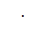
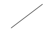
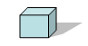
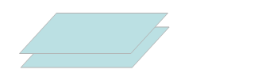
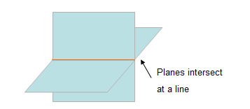

It fits into a scheme that starts with a point, which has no dimensions and goes up through solids which have three dimensions:
| point | line | Plane | Solid |
| Zero dimensions | One dimension | Two dimensions | Three dimensions |
 |
 |
 |
The plane has two dimensions: length and width. But since the plane is infinitely large, the length and width cannot be measured.
Just as a line is defined by two points, a plane is defined by three points. Given three points that are not collinear, there is just one plane that contains all three.

You can think of parallel planes as sheets of cardboard one above the other with a gap between them. Parallel planes are the same distance apart everywhere, and so they never touch.

If two planes are not parallel, then they will intersect (cross over) each other somewhere. Two planes always intersect at a line, as shown above.
In another branch of mathematics called coordinate geometry, points are located on the plane using their
coordinates - two numbers that show where the point is positioned. To achieve this, the plane
is thought to have two scales at right angles. Using a pair of numbers, any point on the plane can be uniquely described.
For more on this, see